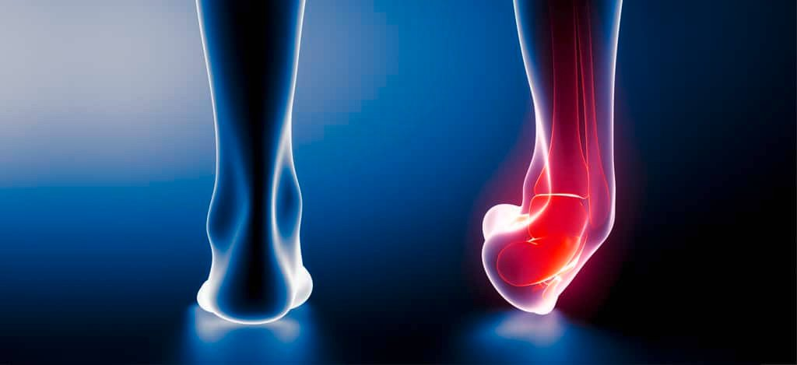
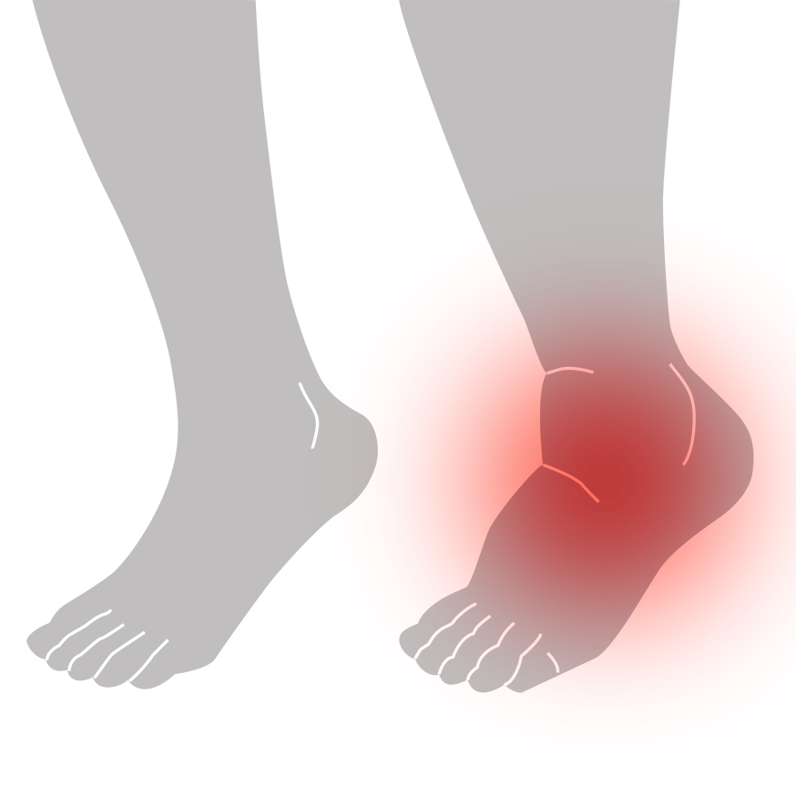

Inom fotboll är det vanligt med vristskador på grund av den höga fysiska belastningen och det intensiva spelet. Fotbollsspelare kan drabbas av vristskador som förstukningsvrickning, sträckning av musklerna runt fotleden och skelettskador som sprickor eller frakturer. Dessa skador kan orsakas av plötsliga vridningar, överanvändning och stötar mot foten. Behandlingen av vristskador inom fotboll kan vara liknande som för andra typer av vristskador och kan innefatta RICE-metoden, medicinering och rehabilitering. För att förebygga vristskador inom fotboll är det viktigt att spelare har rätt tränings- och styrkeprogram, samt att de använder rätt fotbollsskor med bra stöd och grepp, och eventuellt en fotledsstödjande bandage. Det är också viktigt att spelare använder rätt teknik för att undvika stötar och överanvändning av foten och fotleden.
 för att lösa vristskador inom fotboll är det viktigt att genomgå en medicinsk undersökning för att fastställa skadans omfattning och typ, följt av behandling som kan inkludera RICE-metoden, medicinering och rehabilitering. För att förebygga vristskador inom fotboll är det viktigt att använda rätt fotbollsskor med bra stöd och grepp, använda ett fotledsstödjande bandage vid behov, ha rätt tränings- och styrkeprogram, och använda rätt teknik för att undvika överanvändning och stötar mot foten och fotleden. Genom att följa dessa riktlinjer kan man minska risken för vristskador och snabbare återgå till fotbollsspelet efter en skada.
för att lösa vristskador inom fotboll är det viktigt att genomgå en medicinsk undersökning för att fastställa skadans omfattning och typ, följt av behandling som kan inkludera RICE-metoden, medicinering och rehabilitering. För att förebygga vristskador inom fotboll är det viktigt att använda rätt fotbollsskor med bra stöd och grepp, använda ett fotledsstödjande bandage vid behov, ha rätt tränings- och styrkeprogram, och använda rätt teknik för att undvika överanvändning och stötar mot foten och fotleden. Genom att följa dessa riktlinjer kan man minska risken för vristskador och snabbare återgå till fotbollsspelet efter en skada.